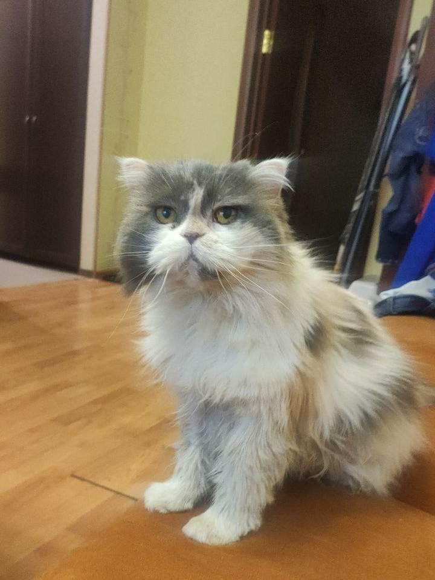

ЭТО БЫЛ МОЙ ПЕРВЫЙ САЙТ
Немного обо мне и моих питомцах
Меня зовут Ксюша.
У меня большая семья. Все животные это мои дети.
У меня их двое: кошка и собака.
С собакой надо гулять 3 раза в день.
С кошкой всё намного проще, просто кормить и следить за её здоровьем (она уже старенькая).

Я с ними часто остаюсь дома одна и забота о них лежит на мне.
Из-за того что я учусь в универе, мне становится тяжело, но мне помогают родители: днем гуляют с собакой и кормят питомцев по утрам.
Жизнь с питомцами очень интересна, никогда не знаешь, что они сотворят через пару минут.
Мне с ними никогда не скучно.